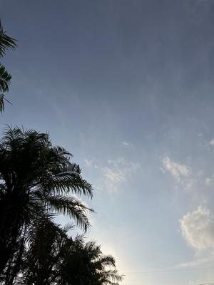
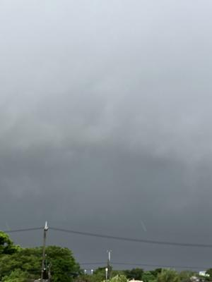
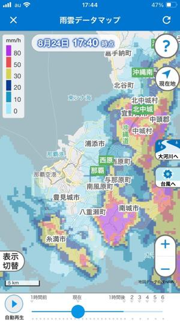
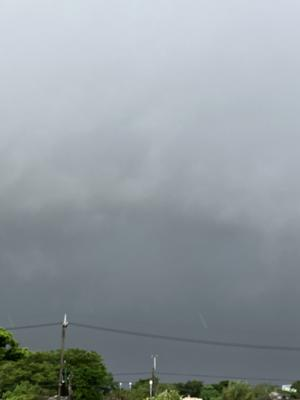
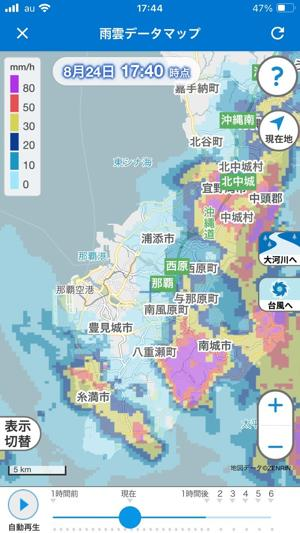

うるがいの話 ある日
最新: 東洋飯店２【うるがいの話 ある日】とは 一日だけのプログです
『うるがいの話』の最新一日だけのプログで、通信料が少なく経済的だ。カニの画像をクリックすると全ての日付が載る『うるがいの話』サイトを表示します
|
|
【うるがいの話】 うるがい(ｳﾙｶﾞｲ urugai)とは、『もずくがに』の名前でとても大きくなります。 |
|---|---|
|
|
【カミマヤーの話】 猫のことを方言でマヤーといいます。カミマヤー（kamimayaa）とは、神の猫のことです。 |
|
【たながぁの音楽】 たながぁ（ﾀﾅｶﾞｰ tanagaa）とは手長えびのことで、何種類かあり大きいのは車 エビぐらいになります。 |

|
【ぶながぁの話】 ぶながぁ(ﾌﾞﾅｶﾞｰ bunagaa)とは、赤い髪の毛、赤い身体、そして身長は１ｍ２０ｃｍ ぐらい、川の蟹を食べているの目撃された。場所は沖縄県国頭郡大宜味村のと ある村僕の隣近所に住んでいる爺さんから、聞いた話です。 |
|
|
【ギーマの話】 ギーマ(giima)とは、山原の里山に咲くスズランに似た、 花を付けます。実は食べられます、 気が付くと口の周りが紫になっています。 |
2024年08月29日 (木）東洋飯店２
15:46

忘れないうちにメモをば、先週の日曜日の食事会の話である。友達のお父さ
んの姉妹の旦那さん、二人とも７０才少しほど、風格のあるオジサン達だっ
た。小さい頃は伊是名村に住んで居たというコメスさん、防音工事をする社
長、週一ゴルフをする。私と共通の趣味であるメジロの話で盛り上がる。
勝連で軍用地主の金持ちと自慢するトウマさん、庭に池があり金魚や鯉を飼
っていると、さらにニシキヘビやトカゲも飼っている。ホー、さらにそれを
ネットで販売しているとこと、なかなか、やる。お酒が好きで、食事会でも
ジョッキのビールを４杯ほど飲んでいた。世代が近いこともあり、話は弾む
『赤犬食べたことがある？』と聞かれ、ないです、ネコはありますがと答え
る。やがて豚やヤギの屠殺のきわどい話になり、血イリチーに話題のとき血
を出している所から、ストローで血を吸う人もいたと。おぇ！、そして私は
ジョギンギが趣味で雨でも走りますヨ、そいうえば昨日（土曜日）の全島エ
イサーの祭りの沖縄市で停電があった大雨の時間帯も走ってました。ついで
なので、雷の音がなるなか歩いた時の土曜日の夕方の写真オバ。
 



そして海藻の話に、モウイはあまり美味しくないという（へー、美味しいけ
ど）いうので、私がイマイチと思う海ぶどうは美味しいですかと言うと二人
とも美味いと言う。その昔、金湾で海藻を取りに村の人（オバァ達）とダッ
トサンで来て荷台に沢山の海藻を持って帰りました。とくに、海ぶどうに似
たプチプチ感のある海藻（売っていないと思いますという）は、美味しかっ
たですねと言うと、トウマさんもそうそう、そういう海藻ありましたね。
その場では、（スーナ）名前出てこず後悔する。ネットで、見せれば良かっ
たかもと、昨日 『カミマヤーの話』に海藻 を載せた。
金持ちオジサン達から、食事会が終わったあと子供は５万円ずつ貰った。
１５時３６分 ビットコインの総資産 ￥２５、０６２（↑１１４）